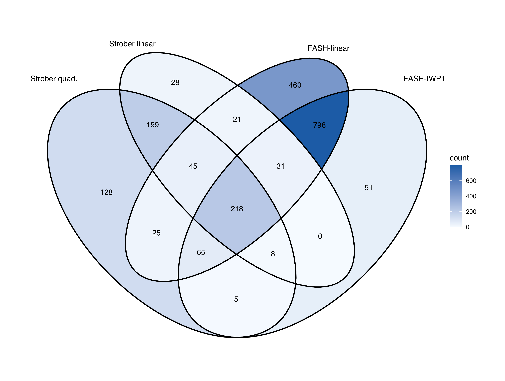
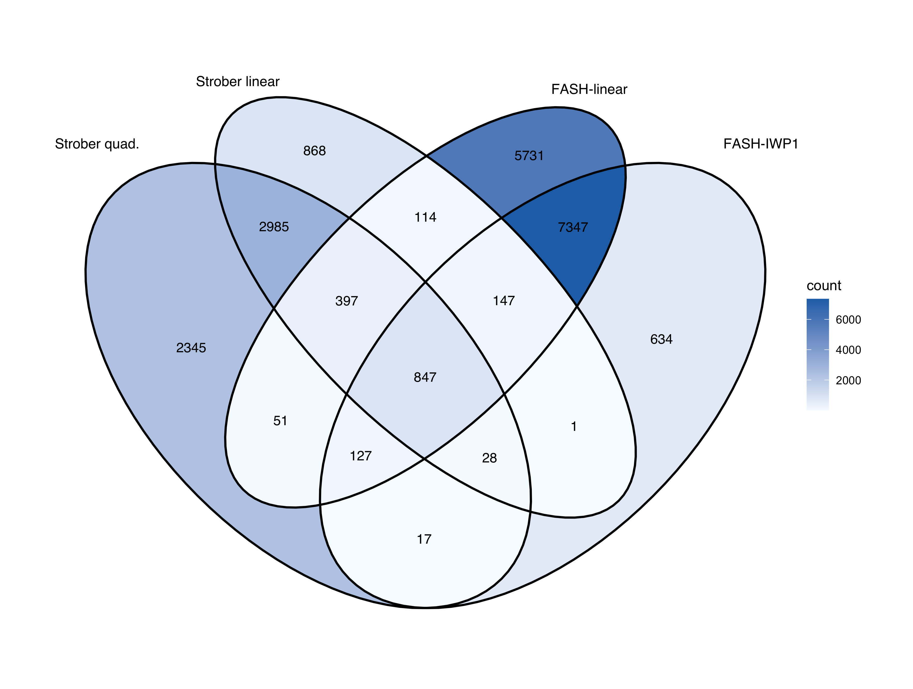

Last updated: 2026-08-21
Checks: 5 2
Knit directory: coderepo-local/
This reproducible R Markdown analysis was created with workflowr (version 1.7.2). The Checks tab describes the reproducibility checks that were applied when the results were created. The Past versions tab lists the development history.
The R Markdown is untracked by Git. To know which version of the R
Markdown file created these results, you’ll want to first commit it to
the Git repo. If you’re still working on the analysis, you can ignore
this warning. When you’re finished, you can run
wflow_publish to commit the R Markdown file and build the
HTML.
The global environment had objects present when the code in the R
Markdown file was run. These objects can affect the analysis in your R
Markdown file in unknown ways. For reproduciblity it’s best to always
run the code in an empty environment. Use wflow_publish or
wflow_build to ensure that the code is always run in an
empty environment.
The following objects were defined in the global environment when these results were created:
| Name | Class | Size |
|---|---|---|
| analysis_id | character | 152 bytes |
| cache | list | 5.9 Mb |
| cache_path | character | 264 bytes |
| configuration | list | 3.9 Kb |
| current_fit_md5 | character | 256 bytes |
| current_input_md5 | character | 1 Kb |
| current_overlap_input_md5 | character | 672 bytes |
| discovery_counts | data.frame | 1.9 Kb |
| discovery_counts_display | data.frame | 1.7 Kb |
| expected_cache_fields | character | 1 Kb |
| expected_discovery_rows | data.frame | 1.6 Kb |
| expected_fit_md5 | character | 256 bytes |
| expected_grid | numeric | 464 bytes |
| expected_iwp1_linear | data.frame | 1.6 Kb |
| expected_iwp2_linear | data.frame | 1.6 Kb |
| expected_methods | character | 352 bytes |
| expected_overlap_fields | character | 496 bytes |
| expected_units | character | 280 bytes |
| extracted | character | 232 bytes |
| find_workflowr_root_reporting | function | 22.4 Kb |
| fit_paths | character | 784 bytes |
| format_decimal_matched | function | 1.1 Kb |
| format_directional_overlap_matched | function | 32.9 Kb |
| format_integer_matched | function | 1.3 Kb |
| iwp_bf_counts | data.frame | 1.6 Kb |
| iwp_linear_overlap | data.frame | 1.6 Kb |
| iwp1_linear_proportion_display | data.frame | 1.6 Kb |
| iwp2_linear_proportion_display | data.frame | 1.6 Kb |
| linear_bf_counts | data.frame | 1.6 Kb |
| linear_bf_path | character | 264 bytes |
| linear_raw_path | character | 264 bytes |
| matched_settings_table | data.frame | 4.4 Kb |
| observed_discovery_rows | data.frame | 1.6 Kb |
| output_directory | character | 248 bytes |
| overlap_cache | list | 9.2 Kb |
| overlap_cache_path | character | 272 bytes |
| package_display | data.frame | 1.6 Kb |
| package_provenance | data.frame | 1.9 Kb |
| page | character | 168 bytes |
| pages | character | 256 bytes |
| pairwise_overlap | data.frame | 3.2 Kb |
| prior_weights | data.frame | 13.3 Kb |
| render_scrollable_table_matched | function | 8.7 Kb |
| require_reporting_package_matched | function | 9.2 Kb |
| required_paths | character | 1.1 Kb |
| run_status | list | 1.9 Kb |
| run_status_path | character | 264 bytes |
| runtime_summary | data.frame | 1 Kb |
| validation | data.frame | 2.1 Kb |
| venn_region_counts | data.frame | 3.7 Kb |
| venn_sets | list | 5.8 Mb |
| workflowr_root | character | 168 bytes |
The command set.seed(20251109) was run prior to running
the code in the R Markdown file. Setting a seed ensures that any results
that rely on randomness, e.g. subsampling or permutations, are
reproducible.
Great job! Recording the operating system, R version, and package versions is critical for reproducibility.
Nice! There were no cached chunks for this analysis, so you can be confident that you successfully produced the results during this run.
Great job! Using relative paths to the files within your workflowr project makes it easier to run your code on other machines.
Great! You are using Git for version control. Tracking code development and connecting the code version to the results is critical for reproducibility.
The results in this page were generated with repository version c87957a. See the Past versions tab to see a history of the changes made to the R Markdown and HTML files.
Note that you need to be careful to ensure that all relevant files for
the analysis have been committed to Git prior to generating the results
(you can use wflow_publish or
wflow_git_commit). workflowr only checks the R Markdown
file, but you know if there are other scripts or data files that it
depends on. Below is the status of the Git repository when the results
were generated:
Ignored files:
Ignored: .DS_Store
Ignored: .Rhistory
Ignored: .Rproj.user/
Ignored: Rplots.pdf
Ignored: analysis/.DS_Store
Ignored: analysis/.Rhistory
Ignored: code/.DS_Store
Ignored: code/.Rhistory
Ignored: code/revision_simulations/.DS_Store
Ignored: data/appendixB/
Ignored: data/dynamic_eQTL_real/
Ignored: data/revision_simulations/
Ignored: data/toy_example/
Ignored: output/dynamic_eQTL_real/
Ignored: output/pdf/
Ignored: output/playwright/
Ignored: output/revision_simulations/
Untracked files:
Untracked: analysis/revision_internal_evaluation_grid_mc_sensitivity.rmd
Untracked: analysis/revision_internal_evaluation_grid_mc_sensitivity_middle_4_11.rmd
Untracked: analysis/revision_internal_fash_cl_manuscript_impact.rmd
Untracked: analysis/revision_internal_fash_discovery_variant_count.rmd
Untracked: analysis/revision_internal_fash_linear_real_data_ablation.rmd
Untracked: analysis/revision_internal_fashr_correlated_observation_model.rmd
Untracked: analysis/revision_internal_matched_fash_linear_real_data.rmd
Untracked: analysis/revision_internal_r1_normality_assumption.rmd
Untracked: analysis/revision_internal_small_m_clean_working_null_sensitivity.rmd
Untracked: analysis/revision_internal_small_m_matched_null_eb_sensitivity.rmd
Untracked: analysis/revision_internal_twenty_variant_per_gene_refit.rmd
Untracked: apps/
Untracked: code/02_dyn_lfsr.R
Untracked: code/02_dyn_lfsr.sbatch
Untracked: code/revision_simulations/internal/covariance_estimation/run_design_propagated_null_correlation.R
Untracked: code/revision_simulations/internal/covariance_estimation/run_multigene_null_beta_covariance_exploration.R
Untracked: code/revision_simulations/internal/early_window_sensitivity/
Untracked: code/revision_simulations/internal/evaluation_grid_sensitivity/
Untracked: code/revision_simulations/internal/fash_cl_manuscript_impact/
Untracked: code/revision_simulations/internal/fash_discovery_variant_count/
Untracked: code/revision_simulations/internal/fash_linear_real_data_ablation/
Untracked: code/revision_simulations/internal/matched_fash_linear_real_data/
Untracked: code/revision_simulations/internal/r0_linear_iwp_power_mechanism/
Untracked: code/revision_simulations/internal/r0_linear_summary_statistic/
Untracked: code/revision_simulations/internal/r1_known_truth_genotype_permutation/
Untracked: code/revision_simulations/internal/r1_linear_truth_composition/
Untracked: code/revision_simulations/internal/r1_normality_assumption/
Untracked: code/revision_simulations/internal/residual_correlation_fash/
Untracked: code/revision_simulations/internal/selected_signal_genotype_permutation/
Untracked: code/revision_simulations/r5_one_variant_per_gene/
Untracked: code/revision_simulations/shared/build_real_genotype_one_per_gene_cache.R
Untracked: code/revision_simulations/shared/real_genotype_one_per_gene.R
Untracked: code/revision_simulations/shared/test_linear_mixture_fash.R
Untracked: code/revision_simulations/shared/test_real_genotype_one_per_gene.R
Untracked: code/revision_simulations/shared/validate_r1_r2_linear_mixture_pairing.R
Untracked: code/revision_simulations/shared/validate_r1_r2_real_genotype_pairing.R
Untracked: figure/
Unstaged changes:
Modified: analysis/dynamic_eQTL_real.rmd
Modified: analysis/index.Rmd
Modified: analysis/nonlinear_dynamic_eQTL_real.Rmd
Modified: analysis/revision_balanced_variant_thinning.rmd
Modified: analysis/revision_combined_spiky_genotype_simulation.rmd
Modified: analysis/revision_enhancer_enrichment.rmd
Modified: analysis/revision_functional_testing_simulation.rmd
Modified: analysis/revision_genotype_level_simulation.rmd
Modified: code/revision_simulations/README.md
Modified: code/revision_simulations/internal/covariance_estimation/run_global_pca_factor_visualization.R
Modified: code/revision_simulations/internal/fash_strober_enhancer_comparison/enrichment_api.R
Modified: code/revision_simulations/internal/fash_strober_enhancer_comparison/reporting.R
Modified: code/revision_simulations/internal/fash_strober_enhancer_comparison/run_fash_strober_enhancer_comparison.R
Modified: code/revision_simulations/r1_random_bspline/reporting.R
Modified: code/revision_simulations/r1_random_bspline/run_random_bspline_mc_replication.R
Modified: code/revision_simulations/r2_spiky_transient/reporting.R
Modified: code/revision_simulations/r2_spiky_transient/run_combined_spiky_genotype_simulation.R
Modified: code/revision_simulations/r2_spiky_transient/run_spiky_transient_mc_replication.R
Modified: code/revision_simulations/r3_functional_testing/reporting.R
Modified: code/revision_simulations/r3_functional_testing/run_matched_functional_testing_mc_replication.R
Modified: code/revision_simulations/shared/simulation_functions.R
Note that any generated files, e.g. HTML, png, CSS, etc., are not included in this status report because it is ok for generated content to have uncommitted changes.
There are no past versions. Publish this analysis with
wflow_publish() to start tracking its development.
Both FASH fits use the same 1,009,173 time-specific-PC effect
estimates, standard errors, exact constant null, 52-point one-day
predictive-SD grid, betaprec=0, pred_step=1,
penalty=10, corrected BF adjustment, and cumulative-lfdr
FDR 0.05.
For FASH-linear,
\[ \beta_j(t)=a_j+b_j(t-t_{j,\min}),\qquad b_j\sim\sum_{k=1}^{51}\pi_k N\!\left(0,\left\{s_k/\mathrm{pred\_step}\right\}^2\right), \]
where \(s_k=\operatorname{SD}(b_j\,\mathrm{pred\_step})\)
is sd_linear_step. The exact-null component is \(s_0=0\). Its 51 positive values are
numerically identical to the IWP1 psd grid.
The exact fitting code from the full-data runner is shown below. The
linear likelihood does not use IWP basis coefficients, so
betaprec is retained as a matched setting rather than
passed to the linear-mixture fitting helper.
# Match the predictive-SD grid and fitting options to the IWP1 reference fit.
matched_grid <- as.numeric(current_raw$psd_grid)
matched_pred_step <- as.numeric(current_raw$settings$pred_step)
matched_penalty <- as.integer(current_raw$settings$penalty)
matched_betaprec <- as.numeric(current_raw$settings$betaprec)
matched_likelihood <- as.character(current_raw$settings$likelihood)
# Fit the exact-null plus 51-component linear-slope mixture.
linear_raw <- fit_linear_mixture_fash_from_stats(
statistics = statistics,
grid = matched_grid,
pred_step = matched_pred_step,
penalty = matched_penalty,
statistic_time_span = 15,
n_time = 16
)
# Record the matched likelihood settings in the fitted object.
linear_raw$settings$betaprec <- matched_betaprec
linear_raw$settings$likelihood <- matched_likelihood
# Apply the same corrected Bayes-factor adjustment used for FASH-IWP1.
linear_bf <- BF_update_linear_mixture_fash(linear_raw)settings_to_report <- matched_settings_table[, c(
"setting", "fash_iwp1", "fash_linear", "alignment"
)]
names(settings_to_report) <- c(
"Setting", "FASH-IWP1", "FASH-linear", "Alignment"
)
render_scrollable_table_matched(
settings_to_report,
caption = "Table 1. Matched data, prior-scale, fitting, and discovery settings.",
minimum_width = "1040px"
)| Setting | FASH-IWP1 | FASH-linear | Alignment |
|---|---|---|---|
| Tested units | 1,009,173 | 1,009,173 | Identical |
| Time grid | 0:15 | 0:15 | Identical |
| Likelihood | Gaussian | Gaussian | Identical |
| Null trajectory | Unrestricted constant | Unrestricted constant | Identical |
| Alternative family | IWP1 Gaussian process mixture | Zero-centered Gaussian slope mixture | Matched scale; different covariance geometry |
| Scale parameter | psd | SD(beta * pred_step) | Equivalent one-step SD |
| Grid components | 52 | 52 | Identical |
| Positive grid range | 0.006738 to 1.0 | 0.006738 to 1.0 | Identical |
| pred_step | 1 | 1 | Identical |
| betaprec | 0 | 0 | Identical |
| penalty | 10 | 10 | Identical |
| IWP basis functions | 20 | Not used: exact rank-one linear kernel | Not applicable |
| FDR rule | Cumulative lfdr at 0.05 | Cumulative lfdr at 0.05 | Identical |
The scientific selection rules used below are:
alpha <- 0.05
iwp1_bf_indices <- select_cumulative_lfdr_calls(
fash_iwp1_bf$lfdr,
alpha
)
linear_bf_indices <- select_cumulative_lfdr_calls(
fash_linear_bf$lfdr,
alpha
)
strober_quadratic_discoveries <- subset(strober_quadratic, eFDR <= alpha)
strober_linear_discoveries <- subset(strober_linear, eFDR <= alpha)After BF adjustment, FASH-IWP1 identifies 9,214 pairs, 1,176 genes, and 9,148 unique variants. FASH-linear identifies 14,902 pairs, 1,663 genes, and 14,761 unique variants.
render_scrollable_table_matched(
discovery_counts_display,
caption = "Table 2. Raw and BF-adjusted cumulative-lfdr FDR-0.05 discovery counts.",
digits = 6L,
minimum_width = "820px"
)| Method | Adjustment | Pairs | Genes | Unique variants | Estimated pi0 |
|---|---|---|---|---|---|
| FASH-IWP1 | Raw | 43,860 | 3,258 | 42,893 | 0.42899 |
| FASH-IWP1 | BF-adjusted | 9,214 | 1,176 | 9,148 | 0.938159 |
| FASH-linear | Raw | 60,188 | 3,863 | 58,570 | 0.457235 |
| FASH-linear | BF-adjusted | 14,902 | 1,663 | 14,761 | 0.919253 |
The directional coverage is the fraction of each IWP discovery set also found by FASH-linear.
render_scrollable_table_matched(
iwp1_linear_proportion_display,
caption = "Table 3. BF-adjusted FASH-IWP1 discoveries covered by BF-adjusted FASH-linear at the three reporting levels.",
minimum_width = "860px"
)| Level | FASH-linear | FASH-IWP1 | Intersection | FASH-IWP1 covered by linear |
|---|---|---|---|---|
| Pairs | 14,902 | 9,214 | 8,530 | 92.6% |
| Genes | 1,663 | 1,176 | 1,112 | 94.6% |
| Variants | 14,761 | 9,148 | 8,468 | 92.6% |
render_scrollable_table_matched(
iwp2_linear_proportion_display,
caption = "Table 4. BF-adjusted FASH-IWP2 discoveries covered by BF-adjusted FASH-linear at the three reporting levels.",
minimum_width = "860px"
)| Level | FASH-linear | FASH-IWP2 | Intersection | FASH-IWP2 covered by linear |
|---|---|---|---|---|
| Pairs | 14,902 | 44 | 21 | 47.7% |
| Genes | 1,663 | 9 | 6 | 66.7% |
| Variants | 14,761 | 44 | 21 | 47.7% |
FASH-linear covers 92.6% of the FASH-IWP1 pair discoveries and 47.7% of the FASH-IWP2 pair discoveries.
The following Venn diagrams extend the real-data comparison by adding BF-adjusted FASH-linear to Strober quadratic, Strober linear, and BF-adjusted FASH-IWP1. Strober discoveries use eFDR at most 0.05.
pair_sets <- list(
`Strober quad.` =
venn_sets$`Gene-variant pairs`$`Strober quadratic`,
`Strober linear` =
venn_sets$`Gene-variant pairs`$`Strober linear`,
`FASH-linear` =
venn_sets$`Gene-variant pairs`$`FASH-linear BF`,
`FASH-IWP1` =
venn_sets$`Gene-variant pairs`$`FASH-IWP1 BF`
)
ggVennDiagram::ggVennDiagram(
pair_sets,
label = "count",
label_alpha = 0,
label_size = 3.7,
set_size = 3.8,
edge_size = 0.8
) +
ggplot2::scale_fill_gradient(low = "#f7fbff", high = "#2171b5") +
ggplot2::theme(
legend.position = "right",
plot.margin = ggplot2::margin(20, 40, 20, 40)
)Figure 1. Gene-variant-pair overlap among Strober quadratic, Strober linear, BF-adjusted FASH-IWP1, and BF-adjusted FASH-linear. FASH sets use cumulative-lfdr FDR 0.05; Strober sets use eFDR 0.05.
gene_sets <- list(
`Strober quad.` = venn_sets$Genes$`Strober quadratic`,
`Strober linear` = venn_sets$Genes$`Strober linear`,
`FASH-linear` = venn_sets$Genes$`FASH-linear BF`,
`FASH-IWP1` = venn_sets$Genes$`FASH-IWP1 BF`
)
ggVennDiagram::ggVennDiagram(
gene_sets,
label = "count",
label_alpha = 0,
label_size = 3.7,
set_size = 3.8,
edge_size = 0.8
) +
ggplot2::scale_fill_gradient(low = "#f7fbff", high = "#2171b5") +
ggplot2::theme(
legend.position = "right",
plot.margin = ggplot2::margin(20, 40, 20, 40)
)
Figure 2. Gene-level overlap among Strober quadratic, Strober linear, BF-adjusted FASH-IWP1, and BF-adjusted FASH-linear. A gene enters a set when at least one of its tested variants is discovered by that method.
variant_sets <- list(
`Strober quad.` = venn_sets$Variants$`Strober quadratic`,
`Strober linear` = venn_sets$Variants$`Strober linear`,
`FASH-linear` = venn_sets$Variants$`FASH-linear BF`,
`FASH-IWP1` = venn_sets$Variants$`FASH-IWP1 BF`
)
ggVennDiagram::ggVennDiagram(
variant_sets,
label = "count",
label_alpha = 0,
label_size = 3.7,
set_size = 3.8,
edge_size = 0.8
) +
ggplot2::scale_fill_gradient(low = "#f7fbff", high = "#2171b5") +
ggplot2::theme(
legend.position = "right",
plot.margin = ggplot2::margin(20, 40, 20, 40)
)
Figure 3. Unique-variant overlap among Strober quadratic, Strober linear, BF-adjusted FASH-IWP1, and BF-adjusted FASH-linear. Each rsID is counted once per method, regardless of the number of associated genes.
The BF-adjusted IWP1–linear intersections are 8,530 pairs, 1,112 genes, and 8,468 unique variants. These are real-data set comparisons, not known-truth power comparisons.
The page reads the versioned cache and does not refit the million-pair model.
OMP_NUM_THREADS=1 \
OPENBLAS_NUM_THREADS=1 \
MKL_NUM_THREADS=1 \
VECLIB_MAXIMUM_THREADS=1 \
BLIS_NUM_THREADS=1 \
Rscript --vanilla \
code/revision_simulations/internal/matched_fash_linear_real_data/\
run_matched_fash_linear_real_data.R
Rscript --vanilla \
code/revision_simulations/internal/matched_fash_linear_real_data/\
build_iwp_overlap_proportion_cache.R
Rscript --vanilla -e \
'workflowr::wflow_build("analysis/revision_internal_matched_fash_linear_real_data.rmd", local = TRUE)'render_scrollable_table_matched(
package_display,
caption = "Table 5. Software provenance for the fresh FASH-linear rerun.",
minimum_width = "1120px"
)| Package | Version | Git ref | Git SHA | Built |
|---|---|---|---|---|
| fashr | 0.1.43 | fashr-0.1.43-testing | bf223df75da6e41ae48607a56b4cd12d7c3b24e7 | R 4.5.1; aarch64-apple-darwin20; 2026-08-21 05:39:43 UTC; unix |
render_scrollable_table_matched(
validation,
caption = "Table 6. Numerical, provenance, set-construction, and resource validations.",
minimum_width = "760px"
)| check | passed |
|---|---|
| approved_fashr_version_and_sha | TRUE |
| iwp1_settings_match_requested_hyperparameters | TRUE |
| grid_values_and_size_identical | TRUE |
| pair_count_and_order_identical | TRUE |
| retained_statistics_match_current_iwp_data | TRUE |
| direct_and_accelerated_likelihoods_match | TRUE |
| raw_linear_fit_valid | TRUE |
| bf_linear_fit_valid | TRUE |
| bf_preserves_conditional_alternative_weights | TRUE |
| authoritative_inputs_immutable | TRUE |
| four_method_venn_sets_complete | TRUE |
| exclusive_venn_regions_partition_each_union | TRUE |
| single_process_single_thread_configuration | TRUE |
render_scrollable_table_matched(
runtime_summary,
caption = "Table 7. Single-process runtime for fitting and cache construction.",
digits = 2L,
minimum_width = "620px"
)| stage | elapsed_seconds |
|---|---|
| Full linear fit plus BF update | 75 |
| Complete runner | 120 |
sessionInfo()R version 4.5.1 (2025-06-13)
Platform: aarch64-apple-darwin20
Running under: macOS Sequoia 15.6.1
Matrix products: default
BLAS: /System/Library/Frameworks/Accelerate.framework/Versions/A/Frameworks/vecLib.framework/Versions/A/libBLAS.dylib
LAPACK: /Library/Frameworks/R.framework/Versions/4.5-arm64/Resources/lib/libRlapack.dylib; LAPACK version 3.12.1
locale:
[1] C.UTF-8/C.UTF-8/C.UTF-8/C/C.UTF-8/C.UTF-8
time zone: America/Chicago
tzcode source: internal
attached base packages:
[1] stats graphics grDevices utils datasets methods base
loaded via a namespace (and not attached):
[1] jsonlite_2.0.0 gtable_0.3.6 dplyr_1.1.4
[4] compiler_4.5.1 promises_1.5.0 tidyselect_1.2.1
[7] Rcpp_1.1.1-1.1 git2r_0.36.2 stringr_1.6.0
[10] dichromat_2.0-0.1 jquerylib_0.1.4 later_1.4.4
[13] scales_1.4.0 yaml_2.3.12 fastmap_1.2.0
[16] ggVennDiagram_1.5.4 ggplot2_4.0.3 R6_2.6.1
[19] labeling_0.4.3 generics_0.1.4 workflowr_1.7.2
[22] knitr_1.50 tibble_3.3.0 rprojroot_2.1.1
[25] bslib_0.9.0 pillar_1.11.1 RColorBrewer_1.1-3
[28] rlang_1.2.0 cachem_1.1.0 stringi_1.8.9
[31] httpuv_1.6.16 xfun_0.55 sass_0.4.10
[34] fs_1.6.6 S7_0.2.2 otel_0.2.0
[37] cli_3.6.6 withr_3.0.3 magrittr_2.0.5
[40] digest_0.6.39 grid_4.5.1 rstudioapi_0.17.1
[43] lifecycle_1.0.5 vctrs_0.7.3 evaluate_1.0.5
[46] glue_1.8.1 whisker_0.4.1 farver_2.1.2
[49] rmarkdown_2.30 tools_4.5.1 pkgconfig_2.0.3
[52] htmltools_0.5.9